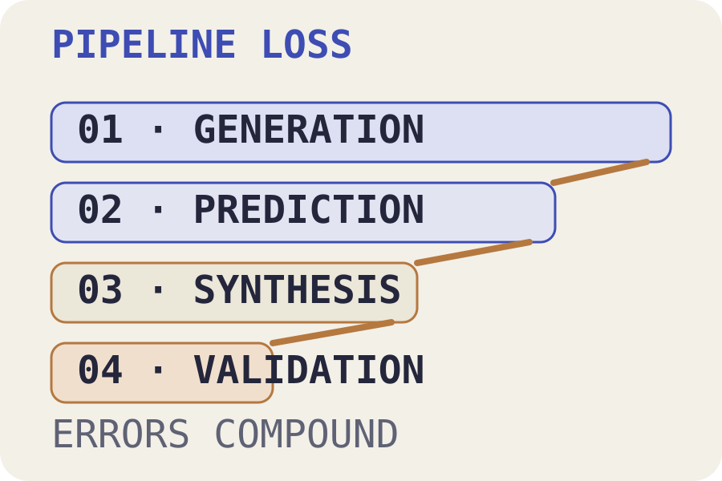
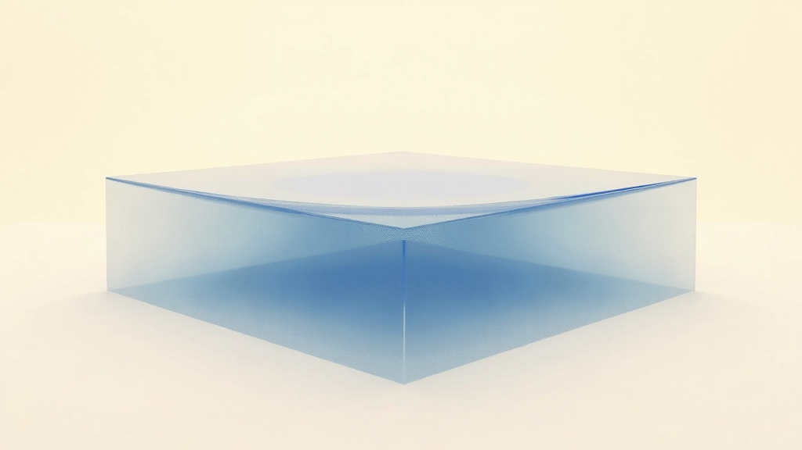
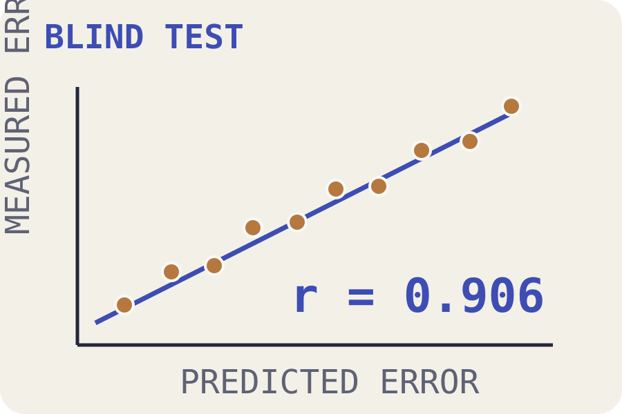
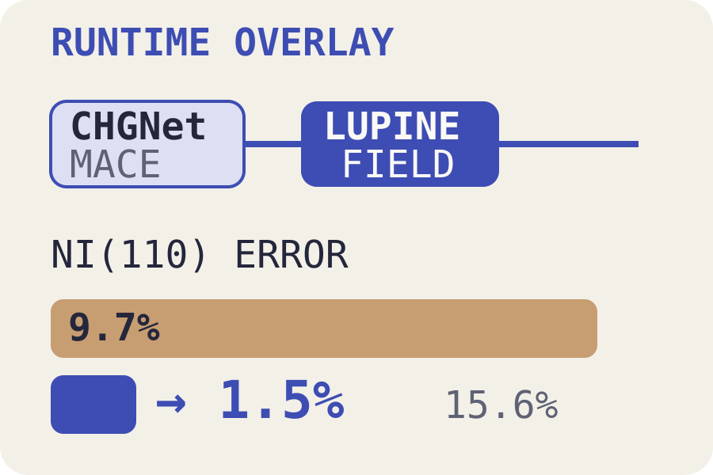
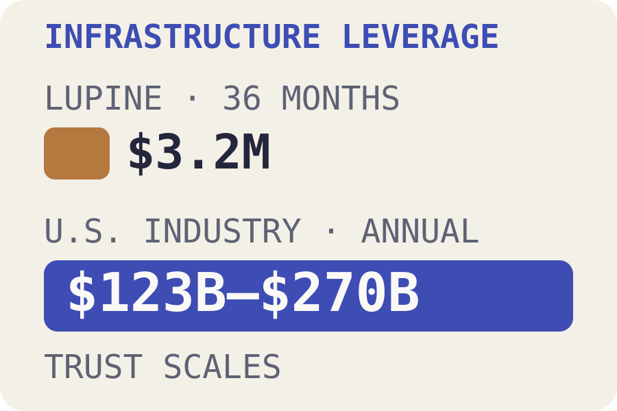
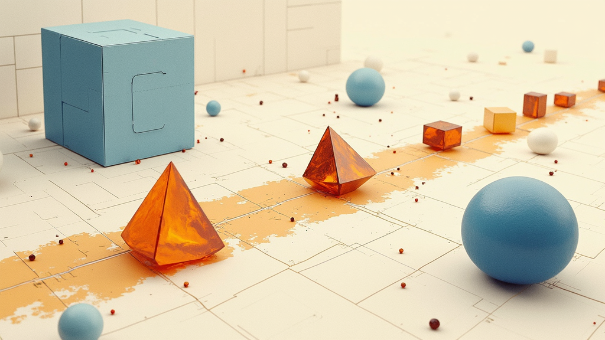

Investment thesis · The bottleneck
Prediction is abundant
The scarce resource is trust.
2.2M → 736Predicted crystals narrowed to independently synthesized evidence.

INVESTING IN THE TRUST LAYER
01 · Pipeline loss
Every stage leaks
Activity is not validated throughput.
Systematic errors propagate from generators to predictors, then into the lab queue.

MORE CANDIDATES ≠ MORE TRUSTED MATERIALS
ARTICLE EVIDENCE · PIPELINE MODEL
02 · Correction layer
Partner, not replacement
Measure the error field.
Correct it at runtime. Prove which claims stay inside the evidence boundary.

LOCAL ENVIRONMENT → SYSTEMATIC ERROR
LUPINE SCIENCE
03 · Blind evidence
Fourth surface · never fitted
Evidence, not confidence.
r = 0.906Three anchors. One blind test. Zero adjustable parameters.

MATERIAL-CLUSTERED 95% CI · 0.82–0.96
BLIND (110) SURFACE
04 · Machine-checked proof
A trust layer can refuse
Say no to yourself.
190 · 0 sorryBuild-locked theorems caught a rounding tie: 27 improvements became 26.
PROVED · REFUSED · OUT OF DOMAIN
INTEGER-SCALED CLAIMS
05 · Runtime compatibility
Correct without replacing
Keep the simulator. Fix the bias.
9.7% → 1.5%Blind nickel surface error, with measured Python overhead of 15.6 percent.

ADDITIVE · ANALYTIC · SELECTIVE
CHGNet / MACE
06 · Economic leverage
Infrastructure across targets
Not one material. Every lab queue.
$3.2M / 36 mo.Against an estimated $123–$270 billion in annual U.S. industry value.

LEVERAGE, NOT A DIRECT VALUATION
FIVE PRIORITY TARGETS
07 · Honest boundaries
The product is the boundary
Predictions laboratories can act on.
The face-centered-cubic field is established. New structure families and industrial validation remain open, gated work.


READ THE FULL ARTICLE · LUPINE.SCIENCE
MEASURE · CORRECT · PROVE